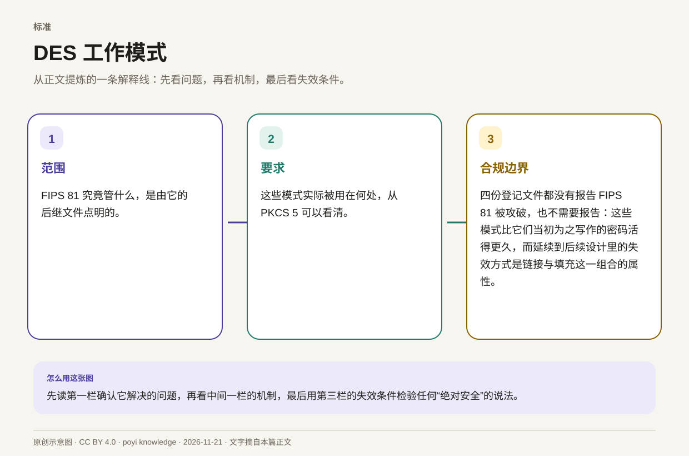
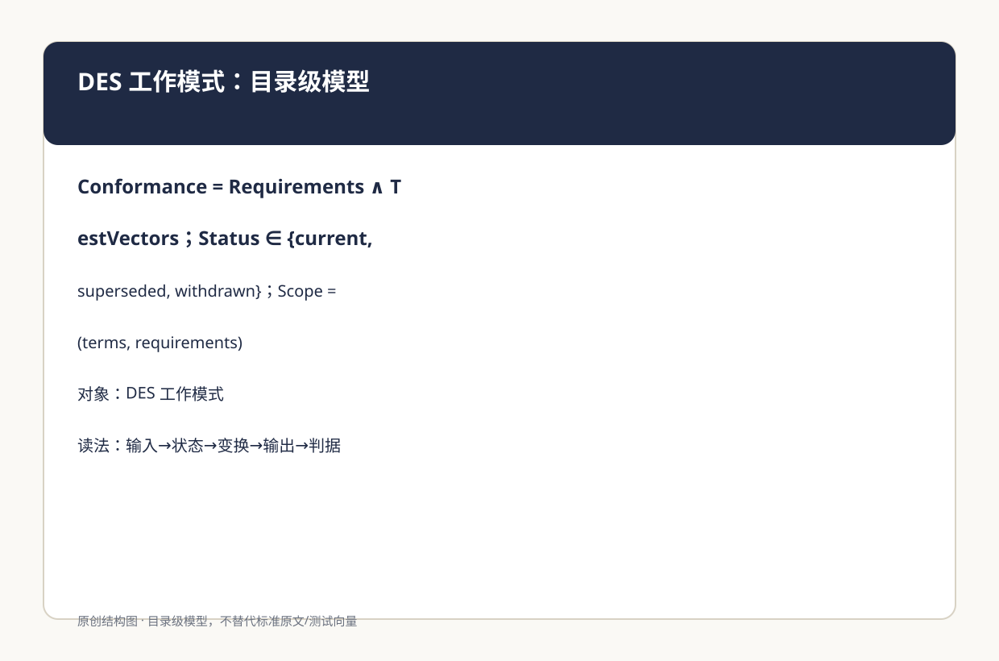

原理与机制
标准：DES 工作模式（DES Modes of Operation）。FIPS 81 究竟管什么，是由它的后继文件点明的。NIST SP 800-38A 在说明自己推荐的模式时于 sp800-38a.txt:303-304 写道 「FIPS Pub.81 [4] specifies the ECB, CBC, CFB, and OFB modes of the Data Encryption Standard (DES).」（FIPS Pub.81 规定了 DES 的 ECB、CBC、CFB 与 OFB 四种模式）——也就是说这项标准的对象是运行 DES 这一分组密码的四种方式，而不是一种新密码。模式的一般形状写在第 478 行：「A confidentiality mode of operation of the block cipher algorithm consists of two processes that are inverses of each other: encryption and decryption.」（分组密码算法的一个保密工作模式由两个互为逆过程的运算组成：加密与解密）。模式因此位于密码算法与消息之间：密码本身仍是单分组函数，模式决定如何反复施加它。四个定义里有两个作为成文语句留存下来。ECB 在第 561 行：「The Electronic Codebook (ECB) mode is a confidentiality mode that features, for a given key, the assignment of a fixed ciphertext block to each plaintext block, analogous to the assignment of code words in a codebook.」（ECB 是一种保密模式，其特点是在给定密钥下为每个明文块指定一个固定的密文块，类似于码本中码字的分配方式）。CFB 在第 675 行：「The Cipher Feedback (CFB) mode is a confidentiality mode that features the feedback of successive ciphertext segments into the input blocks of the forward cipher to generate output blocks that are exclusive-ORed with the plaintext to produce the ciphertext, and vice versa.」（CFB 是一种保密模式，其特点是把 successive 密文段反馈进前向密码的输入块，产生的输出块与明文异或后得到密文，反之亦然）。CBC（第 602-603 行以明文块与前一个密文块相链接来定义）与 OFB（第 779-783 行以在初使向量上迭代前向密码来定义）在此用自己的话陈述。原因是留存文本的缺陷：第 609-616 行与 688-701 行的形式化公式把异或运算符印成空白，CBC 解密那一行还被错位，所以这些算式只做描述、不作引用。第 504 行给出分组类模式共有的输入规则：「For the ECB and CBC modes, the total number of bits in the plaintext must be a multiple of the block size, b」（对 ECB 与 CBC 模式，明文的总比特数必须是分组长度 b 的整数倍）——分段与流式形态的模式并不以同样方式施加这一条件（第 509-519 行）。

为什么重要
RFC 4949 给出了这个模式族存在的理由。它的条目 $ mode of operation 第 1 义（标注 /cryptographic operation/，rfc4949.txt:10819-10825）把该概念定义为 「A technique for enhancing the effect of a cryptographic algorithm or adapting the algorithm for an application, such as applying a block cipher to a sequence of data blocks or a data stream.」（增强密码算法效果或使算法适应某种应用的一种技术，例如把分组密码施加于一串数据块或数据流）——注意这一条引用跨了三个带缩进的续行，因而引文里保留了抽取件自身的换行空白。这是一个设计层面的陈述而不是史注：模式买到的是两样东西，额外的效果与可适配性，而 FIPS 81 的四种模式正是这二者之间的四种取舍。该词汇表还把来源显露出来：「cipher block chaining (CBC)」（密码分组链接）、「cipher feedback (CFB)」（密码反馈）、「electronic codebook (ECB)」（电子密码本）、「output feedback (OFB)」（输出反馈） 四个条目的定义各以来源标签 [FP081] 收尾（rfc4949.txt:3395、3406、6450、11839），而 「counter mode (CTR)」（计数器模式） 的定义在 rfc4949.txt:4546 以 [SP38A] 收尾。同一份参考文献里并存的这两个标签，是本语料中对FIPS 81 family 到哪里结束、后续工作从哪里开始最干净的表述：在 DES 分组上做链接与反馈记在 1980 年那份文件名下，计数器模式记在 2001 年那份。四者各自做了什么，文中也有简短表述：ECB 直接把算法施加在明文块上并把结果直接当作密文（第 6448-6450 行），CBC 通过链接所产生的密文块来增强 ECB（第 3394-3395 行），CFB 还额外作用于长度可变、不超过分组长度的明文段（第 3403-3406 行），OFB 则改造 ECB 使其作用于此类分段（第 11837-11839 行）。这些子句在此按行号引用并转述，因为定义句跨在带缩进的续行上，上面的引用形式只留给文件能干净印出的片段。
应用与实例
这些模式实际被用在何处，从 PKCS #5 可以看清。RFC 8018 第 6.1 节以强制要求的方式固定了其中一种：PBES1 的底层分组密码必须是 DES 或 RC2 运行于 「cipher block chaining (CBC) mode [NIST81]」（密码分组链接（CBC）模式）（rfc8018.txt:700-702）。这等于把 FIPS 81 的 CBC 变成口令加密方案里的强制部件；同一文件的附录直接命名该构造，「DES-CBC-Pad is single-key DES [NIST46] in CBC mode [NIST81]」（DES-CBC-Pad 是单密钥 DES 在 CBC 模式下运行）并加上填充（rfc8018.txt:1633-1634）。附录 B.2 随后记下转向：从 PKCS #5 v2.0 继承的方案里，「legacy and should only be used for backwards compatibility reasons.」（已被视为遗留，只应出于向后兼容的理由使用）（rfc8018.txt:1617-1618），而作为 PBES2 示例给出的是 AES-CBC-Pad（第 1614 行）——链接模式存活下来，它下面的 DES 密钥没有。理由写在前一节，且关乎密钥长度而非模式本身：「each of which has a key size (56 or 64 bits) that may not be large enough for some applications.」（每个的密钥长度（56 或 64 比特）对某些应用而言可能不够大）（rfc8018.txt:707-708）。该文件同时显示 FIPS 81 在今天怎样被引用：rfc8018.txt:1096 的条目以 「FIPS PUB 81, December 2, 1980.」（FIPS PUB 81，1980 年 12 月 2 日） 收尾——一个完整日期，其写序与 RFC 4949 第 19454 行的写法不同。

边界与攻击面
四份登记文件都没有报告 FIPS 81 被攻破，也不需要报告：这些模式比它们当初为之写作的密码活得更久，而延续到后续设计里的失效方式是链接与填充这一组合的属性。RFC 3711（SRTP 规范）在 rfc3711.txt:2363-2366 把它写成一般性警告：「Some cipher modes of operation that require padding, e.g., standard cipher block chaining (CBC) are very sensitive to attacks on confidentiality if certain padding types are used in the absence of integrity.」（某些需要填充的密码工作模式——例如标准密码分组链接（CBC）——在缺少完整性保护而使用某些填充类型时，对针对机密性的攻击极为敏感）（该引文跨四个带缩进的续行，故其中的多空格是抽取件自身的换行空白）。紧接着的句子把范围收窄到一个具体情形，「used together with CBC mode.」（与 CBC 模式一起使用时），随后对将来的工作施加义务，「proper integrity protection.」（恰当的完整性保护）（第 2368-2370 行）。该攻击在本文献自己的参考文献第 2769-2771 行被解析为 「Security Flaws Induced by CBC Padding」（由 CBC 填充诱发的安全缺陷）——「Application to SSL, IPsec, WTLS...」（对 SSL、IPsec、WTLS 等的攻击），出自 Advances in Cryptology、EUROCRYPT'02、LNCS 2332、第 534-545 页；会议系列、卷号与页码都由这三行印出，不凭记忆复述。值得与这一条分开的是 FIPS 81 家族的两项限制：其一是填充要求，ECB、CBC 与 CFB 要求整数个分组或分段，多余比特必须在加密前补上（SP 800-38A 附录 A，sp800-38a.txt:946-955）；其二是附录 D 就 CBC 说明的可篡改性质，Consequently, for the CBC mode, the decryption of the first ciphertext block is vulnerable to the (deliberate) introduction of bit errors in specific bit positions of the IV if the integrity of the IV is not protected.（sp800-38a.txt:1140-1142）。两者都不是模式代数的破产，而是在缺少完整性保护时只保机密性的模式的后果。同一来源也显示这个家族在 1980 年之后并未冻结：SRTP 的 f8 变换在第 1197-1198 行被描述为 「Output Feedback Mode (OFB) [HAC]」（输出反馈模式（OFB）） 的一个变体，带有更复杂的初始化与反馈函数，即为一个 FIPS 81 从未设想过的用途而选出的 OFB 后代。
历史与背景
本行能支撑的日期就是其来源所印出的日期。SP 800-38A 的参考文献把该条写作 「DES Modes of Operation.」（DES 工作模式） 「U.S.DoC/NIST, December 1980.」（美国 商务部/国家标准与技术研究所，1980 年 12 月）（sp800-38a.txt:6839），只到月份；而 RFC 8018 第 1096 行与 RFC 4949 第 19454 行对同一出版物印出完整到日的日期。该条目记录这一差异，而不是把三处合并成一个整理过的日期。两份文件之间的关系写在 sp800-38a.txt:312-315：较新的出版物把 「the extension of the four confidentiality modes in FIPS Pub 81 for use with any FIPS-approved block cipher」（把 FIPS Pub 81 的四种保密模式扩展用于任何经 FIPS 批准的分组密码） 列为第一个新元素，「the revision of the requirements for these modes」（对这些模式的要求作出修订） 为第二个，「the specification of an additional confidentiality mode, the CTR mode, for use with any FIPS-approved block cipher」（增补一种新的保密模式，即 CTR 计数器模式） 为第三（整段落在第 313-315 行）。按字面读，SP 800-38A 是对 FIPS 81 四种模式的扩展与修订，并新增第五种；它并未把自己描述为废除这些模式。它的地位陈述也朝同一方向：「This recommendation is neither a standard nor a guideline, and as such, is neither mandatory nor binding on Federal agencies.」（本建议书既不是标准也不是指南，因而对联邦机构不具强制性或约束力）（第 277-278 行），以及 「Nothing in this recommendation should be taken to contradict standards and guidelines that have been made mandatory and binding upon Federal agencies by the Secretary of Commerce under his statutory authority.」（本建议书中的任何内容都不应被理解为与商务部部长依其法定职权制定为对联邦机构强制且有约束力的标准与指南相抵触）（第 281-283 行）。至于 FIPS 81 是否已被撤回或被替代：本行登记的四份留存文件全文检索 withdraw、annular、rescind 三个词，任何一个都没有出现，因此此处不断言任何撤回，也不断言任何替代。可作对照的是 RFC 4949 的参考文献附录确实认识这种注记写法——它在 rfc4949.txt:19385 印出 Superseded by [DoD9].——但该注记属于 [DoD7] 条目，即美国国务院的 X.509 证书政策，而第 19454 行的 [FP081] 条目不带任何地位注记。留存证据确实建立起来的是实质上的更替而非文字上的更替：SP 800-38A 是为任何经 FIPS 批准的分组密码（包括 AES）写作的（第 295-298 行），而这组模式比它得名时所依据的那个算法活得更长。
逐步示例与核验
形式模型与复算步骤
[S=\min_i S_i,\quad S_i\in{\text{密钥强度},\text{分组安全},\text{实现安全}}]
DES 工作模式的公开参数、密钥/随机数与消息；变量说明：S 为综合安全强度；各分量取最小值，不能只看密钥位数。1.读取标准规定的密钥/分组/模式参数。2.按标准表换算等效强度。3.取最弱分量作为系统强度。边界：公式只覆盖已登记的参数与假设；参数取值、标准版本和实现细节仍以来源为准。
参考出处
- Wikipedia search entry for DES 工作模式. https://zh.wikipedia.org/w/index.php?search=DES%20%E5%B7%A5%E4%BD%9C%E6%A8%A1%E5%BC%8F
- Handbook of Applied Cryptography (Menezes, van Oorschot, Vanstone). https://www.cacr.math.uwaterloo.ca/hac/